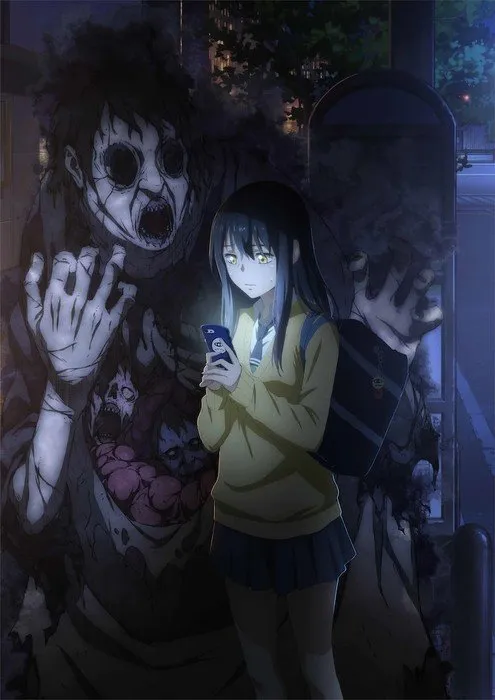

Kareem Adel Mohammed Zayed
بعد عشر سنوات من الكارثة ، تعرضت المدينة إس لأكبر انتشار للوحوش على الإطلاق. يُدعى زو فان [ابن الخائن] وهو أحد أسوأ محاربي النجوم الاحتياطيين. أيقظ النظام الخارق وأنت تسقط في فخ الغارة. شرع في طريق النجاح وطفو مثل النيزك. في غضون ذلك ، يبحث عن الحقيقة بشأن خيانة والده وسط معارضة شرسة ، وينطلق تدريجياً في طريق صعب لإنقاذ العالم.
الفصول